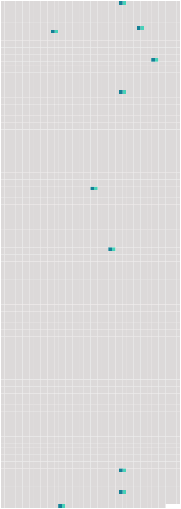

Longueur nb maillons : 10 mentions |
|
Il y avait encore cette audace qui lui était venue de demander à tout propos, quoique ne recevant pas de réponses : « Grand-père, est -ce que j'irai bientôt à [l'école] ?? [10 phrases] Elle pensait qu'il serait bon de la mettre à [l'école] [1 phrases] Certes oui, le père Lumière allait mettre à [l'école] cette gamine qui devenait effrontée autant qu'intelligente. [21 phrases] Ce nom d'Églantine, dont il lui fallait se souvenir à [l'école] , elle devait l'oublier souvent dans le cours de son existence. [17 phrases] Depuis l'entrée de la petite à [l'école] il ne l'avait plus jamais laissée seule, craignant il ne savait trop quoi ; mais aujourd'hui il lui fallait absolument terminer un travail qui ne pouvait attendre. [69 phrases] On la voyait sur une grande étendue, et, tout là-bas, les arbres, par places, se mettaient en rang comme les petites filles à [l'école] [54 phrases] Qu'il était dur, ce premier hiver à [l'école] , pour la petite Eglantine!! [152 phrases] Églantine, à [l'école] , faisait de rapides progrès et cela sans se donner la moindre peine. [14 phrases] Vêtue de laine tricotée par mère Clarisse, et ses sabots bien bourrés de paille fraîche, elle pouvait faire le trajet de [l'école] par tous les temps sans trop souffrir du froid. [9 phrases]
Églantine Lumière vient d'avoir seize ans, et depuis sa sortie de [l'école] elle travaille chez le tailleur de Bléroux, où son grand-père l'a placée afin qu'elle pût apprendre à coudre tout en s'occupant du ménage. |
 |
Il est possible de télécharger la ressource sur la page Ortolang |
Si vous avez des questions ou vous voyez des erreurs, merci d'envoyer un mail à silvia.federzoni89@gmail.com |